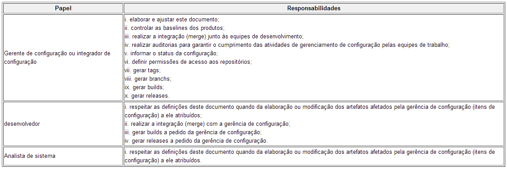
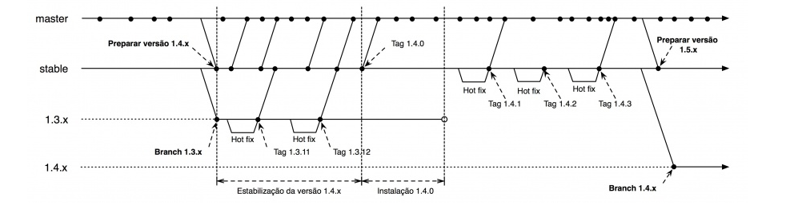
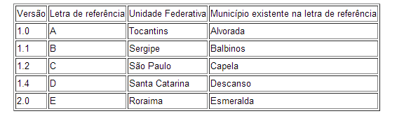
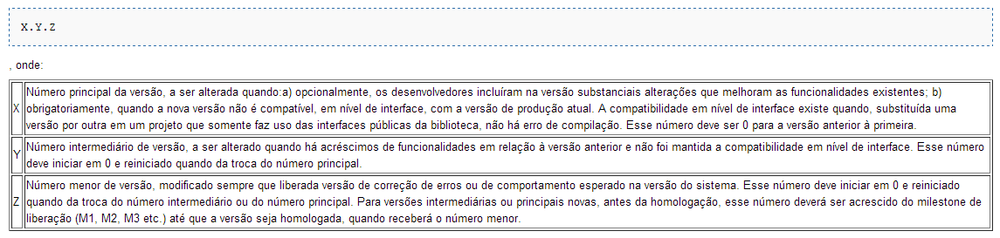
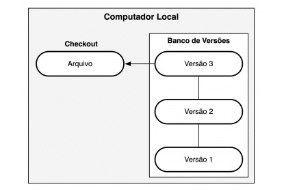
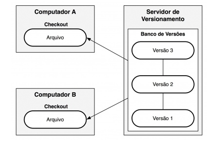
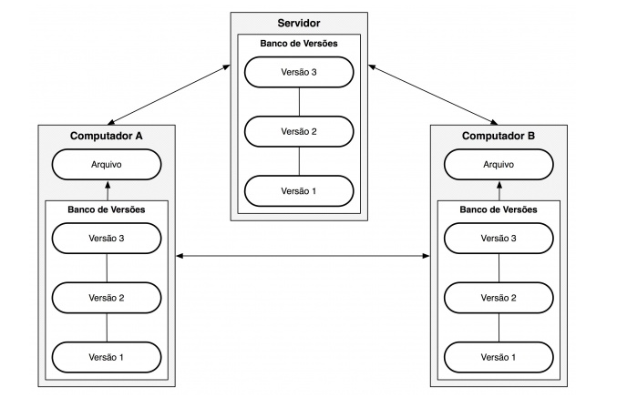

A gerência de configuração é atividade exercida por três papéis, cujas responsabilidades são descritas na tabela abaixo.
Os documentos relacionados ao projeto PJe são mantidos nesta wiki, no testlink e no Redmine. O versionamento adotado para os documentos será o disponível nas ferramentas citadas. Os códigos fontes, assim como artefatos de banco de dados, são mantidos no GIT. Seguem direcionamentos a respeito do versionamento dos artefatos.
O esquema de numeração de versões adotado pelo CNJ é baseado no esquema adotado pela organização Apache Foundation. O esquema define que uma versão é composta por quatro números inteiros, MAJOR.MINOR.MICRO.PATCH onde:
MAJOR Número principal da versão, somente alterado quando: a)há modificação de arquitetura do sistema, ainda que não tenha havido modificação da estrutura de dados; b)há modificação da estrutura de dados que demanda uma migração significativa de uma base para outra base de dados, não sendo suficiente a mera concretização de scripts de migração de dados entre tabelas de um mesmo banco de dados. Esse número deve ser 0 para a versão anterior à primeira. MINOR Número menor de versão, modificado sempre que houver inclusão de um ou mais conjuntos de novas funcionalidades. Esse número deve iniciar em 0 e deve ser reiniciado quando da troca do número principal. MICRO Número micro de versão, modificado sempre que liberada uma versão de correção de erros ou de comportamento esperado na versão do sistema. Esse número deve iniciar em 0 e deve ser reiniciado quando da troca do número intermediário ou do número principal. Para versões intermediárias ou principais novas, antes da homologação, esse número deverá ser acrescido do milestone de liberação (M1, M2, M3 etc.) até que a versão seja homologada, quando receberá o número menor. PATCH Número de correção de versão, modificado sempre que liberada uma versão de correção de erros críticos do sistema. A Figura abaixo apresenta em detalhes como o processo ocorre. O repositório possui dois branches principais: o master, que recebe todas as modificações planejadas para a próxima versão, e o stable, que representa a versão atual em produção. Quando a nova versão está prestes a ser lançada, é realizado um merge entre os branches master e stable. Neste mesmo momento, um branch para a versão atual é criado e mantido até que a nova versão estável esteja pronta para produção. Logo após o merge, inicia-se o período de estabilização da nova versão com o objetivo de corrigir eventuais bugs introduzidos pelas novas funcionalidades. Uma vez estável, uma tag é marcada e a versão está pronta para ser usada em produção e, após o lançamento da versão, inicia-se o ciclo de manutenção.  Nomes das versões do sistemaAs versões intermediárias do sistema receberão o nome de município brasileiro iniciado na letra de referência da versão, estas na ordem alfabética, que não contenha espaços ou caracteres especiais, obtidos a partir do nome das unidades federativas, essas na ordem alfabética inversa. Assim, por exemplo, temos:
 Versões de bibliotecas ou projetos utilitários do sistemaAs bibliotecas ou projetos utilitários do sistema receberão sua numeração seguindo as seguintes regras:
 Versões de banco de dadosOs dumps de bancos de dados seguirão a nomenclatura da versão a que estão vinculadas, acrescido de descritor de seu conteúdo, quando necessário.
Exemplos: pjedb_1.0.1_treinamento.backup pjedb_1.0.1_treinamentobin.backup pjedb_1.0.1_limpa.backup pjedb_1.0.1_limpabin.backup pjedb_1.2.0_limpa.backup No caso de scripts de bancos de dados, deverá ser seguida a seguinte regra de nomenclatura: pjescript_importacao_O método mais utilizado pelos usuários para controle de versão é copiar os arquivos em outro diretório. Esta abordagem é comum devido a sua simplicidade, mas também muito suscetível a erros. É fácil esquecer em que diretório está e acabar removendo ou sobrescrevendo o arquivo errado. Para resolver estes problemas, os programadores desenvolveram Sistemas de Controle de Versão (SCV) locais que possuem um simples banco de dados contendo todas as alterações dos arquivos.
Um dos sistemas de controle de versão mais populares é o rcs, incluso em várias distribuições Linux e no sistema operacional Mac OSX. Essa ferramenta funciona basicamente mantendo conjuntos de mudanças em um formato especial no disco. Dessa forma, o sistema permite a recriação de qualquer arquivo em qualquer momento aplicando as mudanças registradas.
Outro grande problema que as pessoas encontram estava na necessidade de trabalhar em conjunto com outros desenvolvedores, que usam outros sistemas. Para lidar com isso, foram desenvolvidos Sistemas de Controle de Versão Centralizados (Centralized Version Control System ou CVCS). Esses sistemas, como por exemplo o CVS, Subversion e Perforce, possuem um único servidor central que contém todos os arquivos versionados e vários clientes que podem resgatar (check out) os arquivos do servidor. Por muitos anos, esse foi o modelo padrão para controle de versão.
Tal arranjo oferece muitas vantagens, especialmente sobre VCSs locais. Por exemplo, todo mundo pode ter conhecimento razoável sobre o que os outros desenvolvedores estão fazendo no projeto. Administradores têm controle específico sobre quem faz o quê; sem falar que é bem mais fácil administrar um CVCS do que lidar com bancos de dados locais em cada cliente.
Entretanto, esse arranjo também possui grandes desvantagens. O mais óbvio é que o servidor central é um ponto único de falha. Se o servidor ficar fora do ar por uma hora, ninguém pode trabalhar em conjunto ou salvar novas versões dos arquivos durante esse período. Se o disco do servidor do banco de dados for corrompido e não existir um backup adequado, perde-se tudo — todo o histórico de mudanças no projeto, exceto pelas únicas cópias que os desenvolvedores possuem em suas máquinas locais. VCSs locais também sofrem desse problema — sempre que se tem o histórico em um único local, corre-se o risco de perder tudo.
É aí que surgem os Sistemas de Controle de Versão Distribuídos (Distributed Version Control System ou DVCS). Em um DVCS (tais como Git, Mercurial, Bazaar or Darcs), os clientes não apenas fazem cópias das últimas versões dos arquivos: eles são cópias completas do repositório. Assim, se um servidor falha, qualquer um dos repositórios dos clientes pode ser copiado de volta para o servidor para restaurá-lo. Cada checkout (resgate) é na prática um backup completo de todos os dados.
Além disso, muitos desses sistemas lidam muito bem com o aspecto de ter vários repositórios remotos com os quais eles podem colaborar, permitindo que você trabalhe em conjunto com diferentes grupos de pessoas, de diversas maneiras, simultaneamente no mesmo projeto. Isso permite que você estabeleça diferentes tipos de workflow (fluxo de trabalho) que não são possíveis em sistemas centralizados, como por exemplo o uso de modelos hierárquicos.
 FONTE: href=http://www.cnj.jus.br/wikipje/index.php/GIT#Gest.C3.A3o_de_configura.C3.A7.C3.A3o file:///F:/T%C3%89CNICO%20EM%20INFORM%C3%81TICA/Git%20-%20Sobre%20Controle%20de%20Vers%C3%A3o.htm